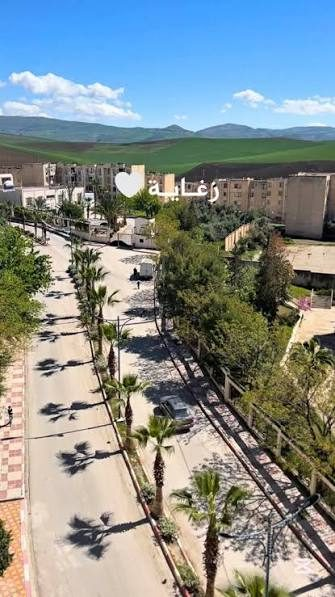

كريم قاجوج
زغاية — ولاية ميلة
الموقع الرسمي للمترشح، لعرض برنامجه الانتخابي ومتابعة أنشطته والتواصل مع سكان البلدية.
استكشف البرنامج
المترشح
- الاسم
- كريم قاجوج (KARIM KADJOUJ)
- المهنة
- أعمال حرة
- المستوى الدراسي
- الثالثة ثانوي
- الحزب
- حركة البناء الوطني — رقم 04
- القائمة
- رقم 13
- البلدية
- زغاية، ولاية ميلة
البرنامج الانتخابي 2027–2032
اثنا عشر محوراً تعبّر عن أولويات التنمية المحلية. ما ورد فيها مقترحات عمل تُنفَّذ في حدود صلاحيات المجلس الشعبي البلدي وإمكاناته وبالتنسيق مع الجهات المختصة، وليست التزامات بنتائج مضمونة.
النصوص أعلاه مسودة تحريرية مبنية على عناوين المحاور، ويُراجعها المترشح ويعتمدها قبل النشر.
زغاية

بلدية زغاية تابعة لولاية ميلة، وهي الإطار الذي يتقدم فيه المترشح ببرنامجه. ستُضاف إلى هذه الصفحة معلومات محلية موثقة وصور للبلدية عند توفر مصادرها المعتمدة.
الأخبار والمستجدات
معرض الصور
اتصال
أرسل رسالتك أو اقتراحك وسيصل إلى فريق الحملة.
سياسة الخصوصية
لا يتطلب هذا الموقع تسجيلاً ولا يجمع بيانات عن زواره. المعلومات التي ترسلها عبر نموذج المراسلة (الاسم والموضوع والرسالة، والبريد إن رغبت) تُستخدم للرد عليك فقط ولا تُنشر ولا تُشارك مع أي طرف. يمكنك طلب حذفها في أي وقت بمراسلتنا.